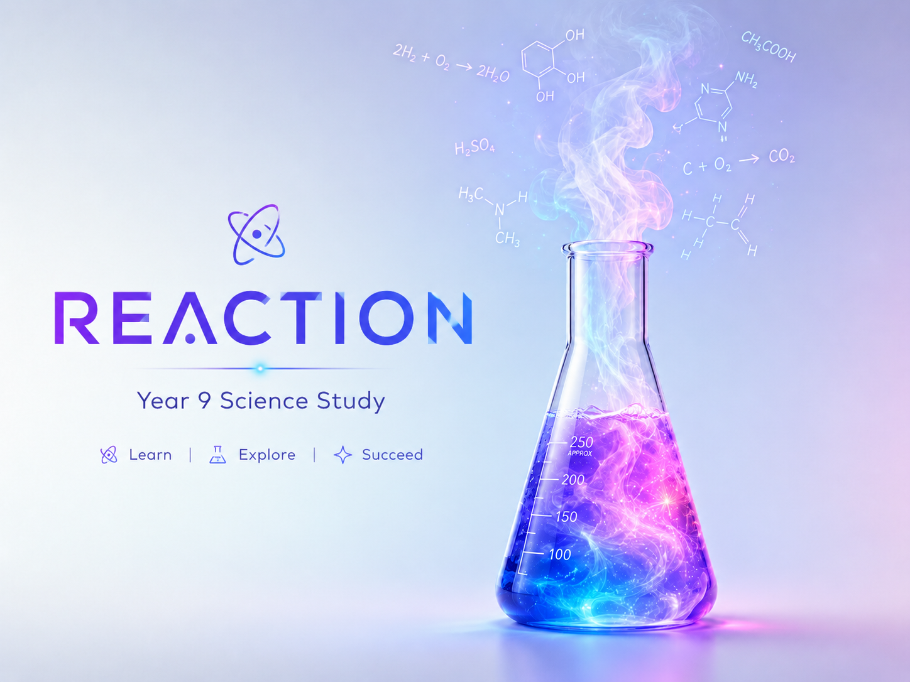

Revision journey
Reaction
Year 9 Science Study
Work through every revision card, decide what is mastered, what needs a revisit, and what needs deeper study. Test mode is saved for cards you already feel confident with.

0
revision cards
Choose your route
Pick what you want to practise.
Every card can be marked as Mastered, Revisit, or Study.
Learning objectives
Choose a unit, objective, or card type.
0revision points
0current streak
0mastered
0revisit
0study
Class notes
Review class notes by subject.
Use these when a question needs more context than the answer alone.